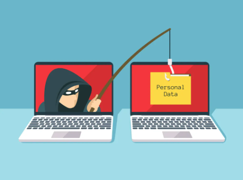

Why phishing deserves your attention

Phishing and spoofing were the FBI's most reported cybercrime complaint category in 2025. This counts reports, not the cause of every breach.
Did you know that phishing and spoofing were the most reported cybercrime category in the FBI's 2025 Internet Crime Complaint Center report? The report recorded 191,561 complaints in that category. That is a count of reports, not proof that every breach started with phishing, but it shows why learning to recognize deceptive messages matters. Read the FBI report.
Phishing uses a trusted identity and an urgent story to get information or a click. School accounts and payments are common themes.
Phishing is a trick in which someone poses as a trusted school, company, classmate, or service. A message may claim that your tuition payment failed, your course account will close, or a package is waiting. The sender wants you to disclose a password, one-time code, or payment information, or to open a link or attachment that leads to malware. According to the Federal Trade Commission's phishing guide, scammers often create a believable story and pressure you to act before you check it.
Different types of phishing

Targeted messages may impersonate a particular person, leader, or business contact. A copied message can look familiar while hiding a changed link.
Spear phishing is tailored to a particular person, perhaps using a real class, job, or club name. Whaling targets someone with a prominent role, such as a dean or department leader. BEC often impersonates a colleague or organization to redirect a payment or request sensitive records. Clone phishing copies a legitimate-looking message and changes its link or attachment. These forms differ in who they target, but all depend on misplaced trust. CISA's phishing overview describes several of these types.
Phishing also arrives by phone or text, and bulk campaigns may be harder to filter. Verify requests through a contact route you found yourself.
The channel can change too. Vishing uses a voice call, while smishing uses a text message. A caller ID or logo can be faked, so it is not proof of identity. The diagram also names snowshoeing, which spreads messages across many senders to make filtering harder. Whether the request arrives by email, phone, or text, use a contact method you found independently rather than the number or link supplied in the message.
Read a phishing example carefully

This fake PayPal email pairs a familiar logo with a Gmail sender, generic greeting, urgent charge claim, and callback number. Those clues deserve attention.
The example email displays a familiar PayPal logo, but its sender uses a Gmail address rather than an official PayPal address. It says “Dear Customer” instead of using an account-specific greeting, claims a large charge was made, and tells the reader to act within hours. The message then offers a phone number as the way to cancel the charge. The pressure to call is part of the attack: a person answering could ask for account details, a verification code, or a payment.
Check the real sender and link destination rather than judging by one visual detail. Open a known app or website yourself to verify an account claim.
Do not rely on a logo, an “external email” banner, or one spelling error alone to decide whether a message is real. Check the actual sender address and the full destination of a link. On a desktop computer you can usually hover over a link to preview its destination; on a phone, avoid tapping a suspicious link merely to inspect it. The safest test is to open the service's known website or app yourself and look for the claimed transaction there.
How to protect yourself and respond
Pause before opening attachments or sharing codes, and verify with the school or service directly. Report suspicious messages and keep your software and MFA current.
Pause, verify, and report. Do not open an unexpected attachment or give out a password or one-time code. If a message appears to come from your school, use the campus website or a phone number already listed there. Report suspicious messages with your email provider's report button or to campus IT, then delete them. Security updates and multi-factor authentication add protection if you make a mistake, but they do not replace checking the request itself.
If you submitted a password or opened a file, secure the account from a trusted device. Run a security scan and contact campus IT when needed.
If you already entered a password into a fake page, go directly to the genuine site on a trusted device, change that password, review recent sign-ins, and sign out of other sessions if the service allows it. Tell campus IT if your school account is involved. If you opened a file, run a security scan as described on the downloads page. The FTC's recovery guidance recommends updating security software and scanning if a link or attachment may have installed malware.
This disabled example imitates an urgent campus-login message. It shows how a deadline can pressure someone into clicking.
Illustrative bait: “Campus access expires today — verify now.”
Sources and further reading
FBI 2025 IC3 Annual Report, FTC phishing guide, and CISA phishing overview.